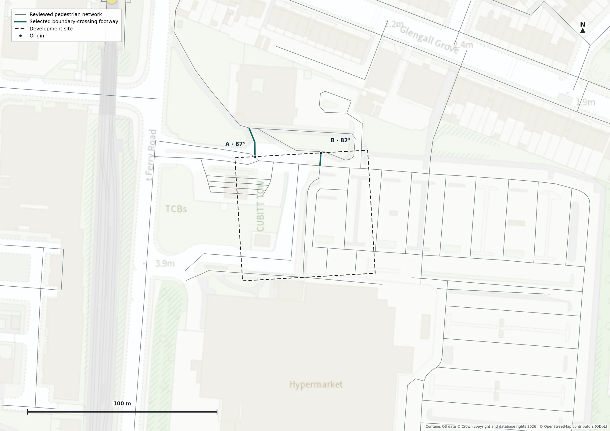
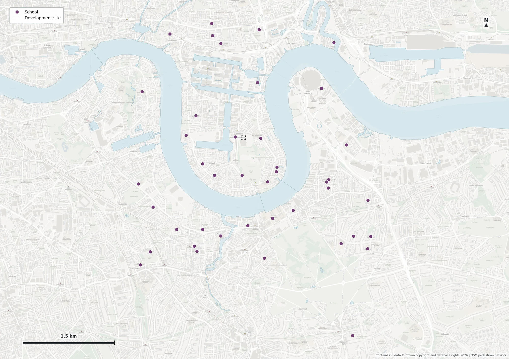
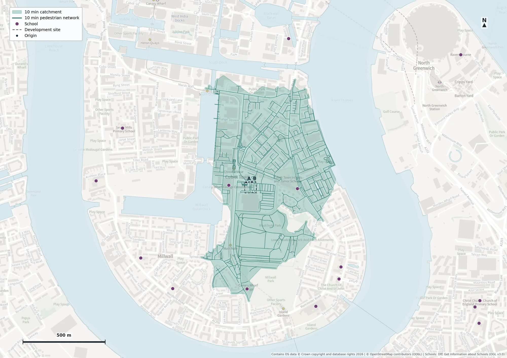
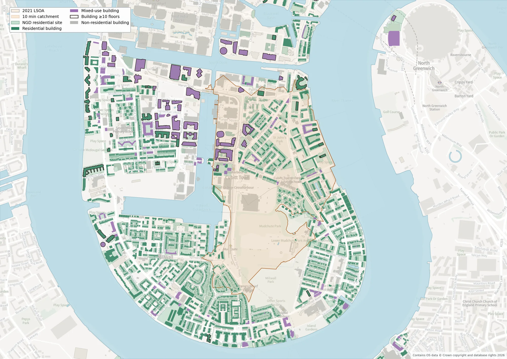

5 MIN
16.2 hectares
8.2 km of reachable network. A compact local catchment focused on Crossharbour and the immediate site context.
GIS Developer Technical Assessment
A reproducible network-based assessment of population and schools around a fictional development site on the Isle of Dogs, London.
Commission. Estimate current population density within a walking catchment of the plot, identify relevant schools and produce workshop-ready mapping.
Primary scenario. 10 minutes at 4.8 km/h from two reviewed planning-proxy access points.
Analysis CRS. British National Grid, EPSG:27700.
The selected C1 surface interpolates travel time over the reviewed pedestrian network, removes mapped water and preserves narrow verified crossing corridors for cartographic continuity. The analytical land geometry remains separate from display-only bridge corridors.

8.2 km of reachable network. A compact local catchment focused on Crossharbour and the immediate site context.
29.0 km of reachable network. This threshold supports the reported population and density estimate.
57.3 km of reachable network. Used as a sensitivity and wider workshop context rather than the primary result.
Schema, CRS, duplicate identifiers, geometry validity, spatial location and attribute consistency were checked before cleaning.
An OSMnx walk network was inspected for components, dead ends, restrictions, geometry and local connectivity. Original downloads remain unchanged.
Origins A and B are planning proxies where two distinct public footways cross the northern site boundary. They do not claim to be future building entrances.
Multi-source Dijkstra uses edge length and a constant 4.8 km/h walking speed. Partially reachable terminal edges are clipped at each time threshold.
Network samples at roughly 15 m support an ordinary-Delaunay travel-time contour. This is an experimental proxy, not a reproduction of constrained-Delaunay research methods.
Mapped water is removed and verified crossings retained. Census 2021 totals are allocated by the proportion of each LSOA intersecting the analytical catchment.
Origin selection
The origins sit directly on reviewed public footways at distinct site-boundary crossings. Using both avoids making the entire result depend on one speculative future entrance while remaining conservative about internal site access.

P1 is the published result because it is directly tied to authoritative Census totals and has the fewest modelling assumptions. OS NGD sites, building footprints and recorded floor counts show the sensitivity to within-zone population distribution.
| Method | Role | Residents | Difference from P1 | Residents / ha |
|---|---|---|---|---|
| P1 · LSOA area weighted | Primary | 8,016 | — | 117.8 |
| P2 · Residential-site weighted | Sensitivity | 9,739 | +21.5% | 143.1 |
| P3 · Building-footprint weighted | Sensitivity | 9,065 | +13.1% | 133.2 |
| P4 · Floor-space proxy, central | Sensitivity | 8,962 | +11.8% | 131.7 |
Formula: populationi, catchment = populationi × area(catchment ∩ LSOAi) ÷ area(LSOAi). Water and display-only bridge corridors are excluded from the 68.038 ha denominator.
Forty-two open London schools were retained after closed, overseas and duplicate records were removed. Three geocoded points fall inside the final C1 10-minute analytical polygon, but an address coordinate is not evidence of a usable pedestrian entrance.

The workflow deliberately avoids snapping every school address point to the nearest network edge. Candidate projections are retained as QA evidence only.
A school becomes a defensible network destination only after its public gate or entrance is checked against buildings, fences, water and the pedestrian graph.
Duplicate LSOA records and an invalid self-intersecting population geometry were identified, logged and corrected in cleaned outputs. Raw inputs were preserved.
Connectivity, restrictions, endpoint geometry, water crossings and the local site context were reviewed. Only explicitly reviewed changes enter the routing graph.
Analytical land, bridge display corridors and cartographically regularised output are separate layers. Reachable land network omitted by the final polygons is 0 m.


The numbered scripts preserve the project’s analytical sequence. API keys live in a local .env file and are excluded from Git. Cached OS Maps tiles are also excluded.
conda env create -f environment.yml
conda activate prior-gis
cp .env.example .env
python scripts/01_validate_data.py
python scripts/02_clean_population.py
python scripts/03_clean_schools.py
python scripts/04_download_pedestrian_network.py
# continue through the documented stagesAuthoritative usual-resident counts by LSOA.
School attributes and address records.
Pedestrian network and analytical water geometry.
OS Places geocoding, OS Maps context and NGD sensitivity support.
Used for implementation, QA suggestions, documentation and cartographic iteration; analytical decisions and rendered outputs were reviewed by the project author.
The model uses a fixed walking speed and does not include slope, crossing delay, crowding, mobility variation or confirmed future building entrances. Population values are estimates from Census allocation rather than current headcounts. The maps support workshop discussion; they do not establish parcel-level pedestrian rights.